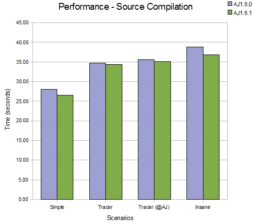
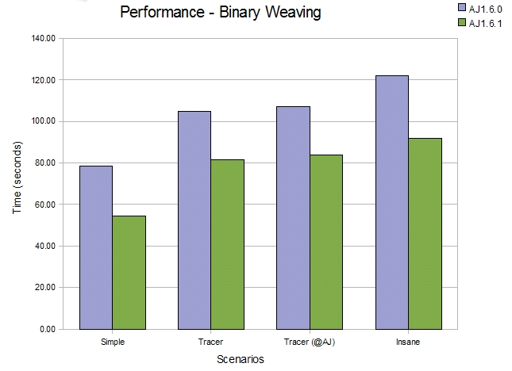
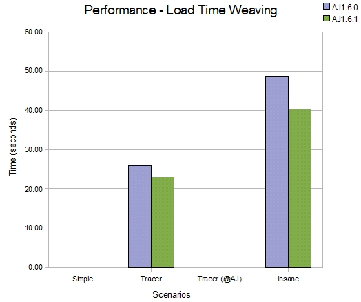
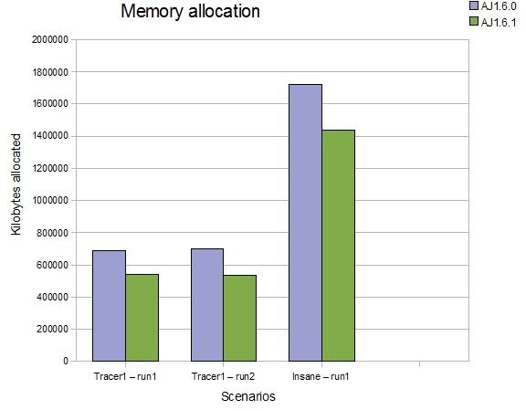
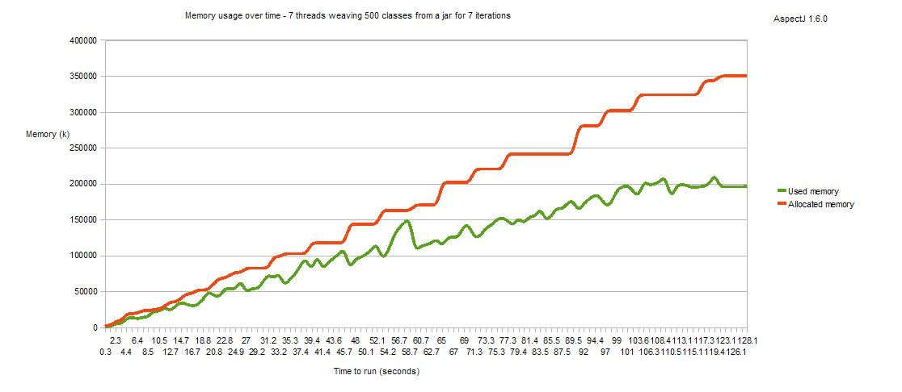
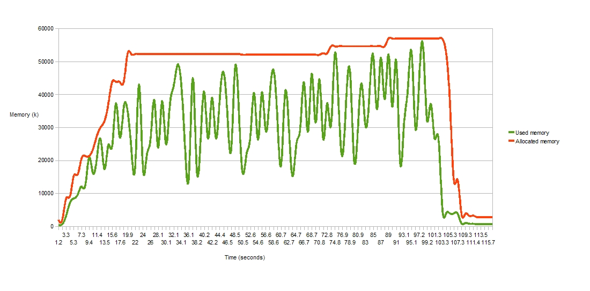

© Copyright 2008 Contributors. All rights reserved.
The main themes of AspectJ1.6.1 are better memory usage and faster weaving. This has been achieved through profiling of the weaving process and has resulted in some serious refactoring of the weaver component within AspectJ. It provides exactly the same functionality as in previous releases, it just weaves faster now, using less code and less memory. This readme will give an overview of the kind of changes made and what can be expected when using 1.6.1 compared to previous releases.
The complete list of issues resolved for AspectJ 1.6.1 can be found with these bugzilla queries. The first lists bugs addressed (more than 60!) whilst the second details enhancements made in this release.
Refactored (bug 231396)
The bugzilla entry goes into more specifics on what has changed, the end result is that aspectjweaver.jar has had around 275 classes removed (about 25%) and has slimmed down by 350k (about 20%). In terms of performance for different scenarios:
Straight compilation
The refactoring effort has been focused on the weaver component, hence there is limited impact on the performance of source compilation but this comparison shows it is faster. Four scenarios are compared, in each scenario a different aspect is applied to the JDT compiler (just as a sample piece of source code).
-
1100 source files, few aspects that target 859 join points.
-
1100 source files, code style trace aspect targeting public methods (22000 join points)
-
1100 source files, annotation style trace aspect (22000 join points)
-
1100 source files, insane aspect (before(): within(*) \{}) (203000 join points)

Binary weaving
Moving on from source compilation to pure binary weaving, the improvements are more obvious. Here we are using the complete JVM classes jar 'rt.jar' as an example of a large jar file for weaving.
-
Binary weaving rt.jar (~12000 classes) with a simple aspect (1200 join points)
-
Binary weaving rt.jar (~12000 classes) with a code style trace aspect (121000 join points)
-
Binary weaving rt.jar (~12000 classes) with an annotation style trace aspect (121000 join points)
-
Binary weaving rt.jar (~12000 classes) with an insane aspect (before(): within(*) \{}) (352000 join points)

Loadtime weaving
The loadtime weaving improvements are similar to those seen for binary weaving (naturally). Here we are using the JDK tools jar 'tools.jar' as an example of a jar file for loadtime weaving.
-
Binary weaving tools.jar (~1900 classes) with a code style trace aspect
-
Binary weaving tools.jar (~1900 classes) with an insane aspect (before(): within(*) \{})

The refactoring work has also reduced the amount of unnecessary garbage created on the heap during the weaving process. The next comparison shows roughly the reduction in amount of 'stuff' created on the heap during a weave. This isn’t the max heap required to do a weave, it is just showing how many less temporary objects are allocated during an entire run of the weaver
-
First, the number of kilobytes of memory allocated from the heap during a weave of tools.jar with a code style trace aspect
-
Second, another run of the same thing
-
Third, this time using the insane aspect

So in terms of memory required, weaving the insane aspect into tools.jar created 1.4G of 'stuff' over the entire weaving process, compared to 1.75G with 1.6.0.
Loadtime weaving stress
As well as addressing the memory usage of a single load time weaver, we have also looked at the use of load time weaving in a larger scale scenario, where multiple classloaders are being instantiated and discarded over time and each has an associated load time weaver. Under bug 210470 we looked in detail at whether the lifecycle of the weaver instance correctly matched the lifecycle of the associated classloader. It did not, but now it does! Here is a memory usage graph for AspectJ1.6.1 - this shows an application that spawns 7 threads which run continuously for a few minutes. Each thread repeatedly creates a classloader, weaves 500 classes using it then discards the classloader. You can see that over time the memory is recovered correctly and when all threads complete (and all classloaders are orphaned), all the weavers are discarded.
First, AspectJ 1.6.0, in which memory was never correctly recovered and so an OutOfMemory problem would always occur eventually.

And now AspectJ 1.6.1:

Incremental compilation
Following on from the work done to improve compilation under Eclipse in AspectJ 1.6.0 (Bug 221427 ) - we now support the building of 'broken code' (bug 102733). This is something the JDT has always been doing - where code containing errors continues to build (if recovery is possible) but should the actual methods containing the errors get invoked, an exception will be thrown at runtime. A number of users typically extract large projects from their library systems, knowing that they will only partially build in their current eclipse setup, but as long at they do not invoke the code containing the errors then they expect the rest of the project to run normally. AspectJ now allows this mode of operation, and it has the additional effect that the state of the project stays consistent, albeit with known errors, and this means AspectJ will more frequently do incremental builds rather than falling back to full builds because there was a compilation error.
Language changes
Optmized syntax for annotation value binding (Bug234943)
If only binding an annotation at a method-execution join point in order to access an enum value within it, there is a more optimal syntax that can be used to produce faster code. Given this setup:
enum Colour { RED,GREEN,BLUE;}
@interface ColouredAnnotation { Colour value(); }
@ColouredAnnotation(Colour.RED)
public void colouredMethod() { }Current syntax:
before(ColouredAnnotation anno): execution(* *(..)) && @annotation(anno) {
printTheColour(anno.value());
}New optional syntax:
before(Colour col): execution(* *(..)) && @annotation(ColouredAnnotation(col)) {
printTheColour(col);
}